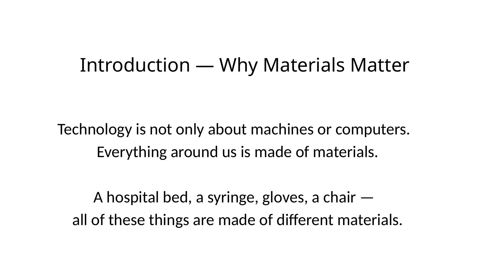
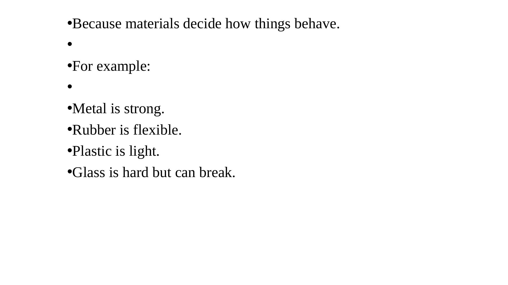
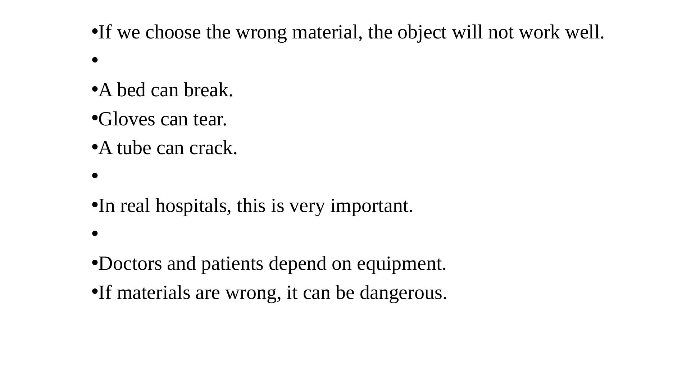
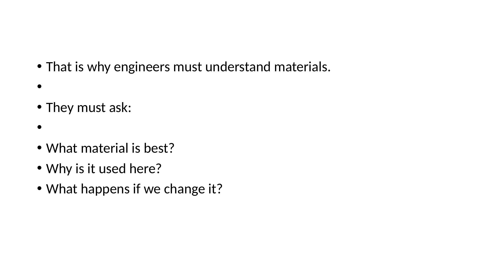
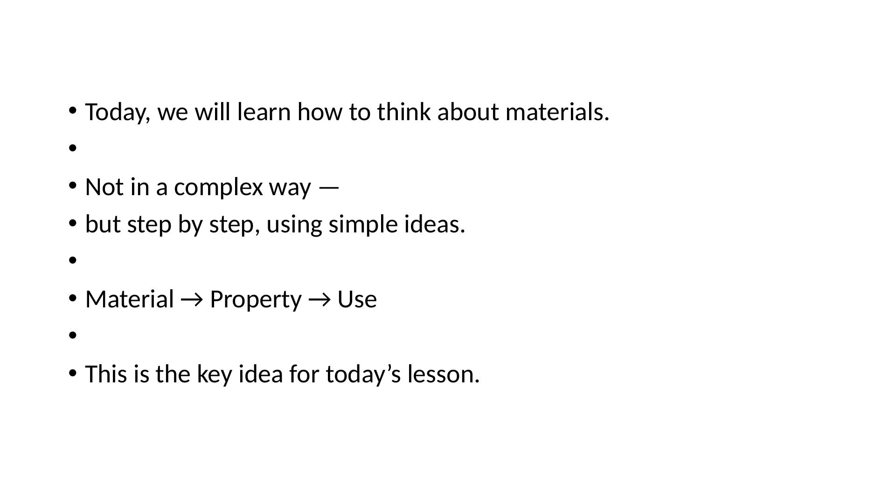
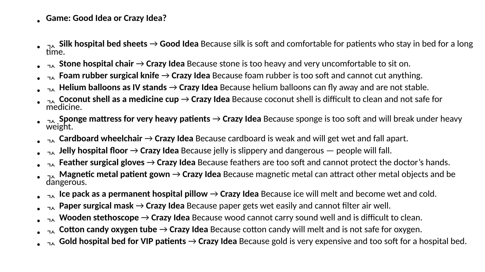
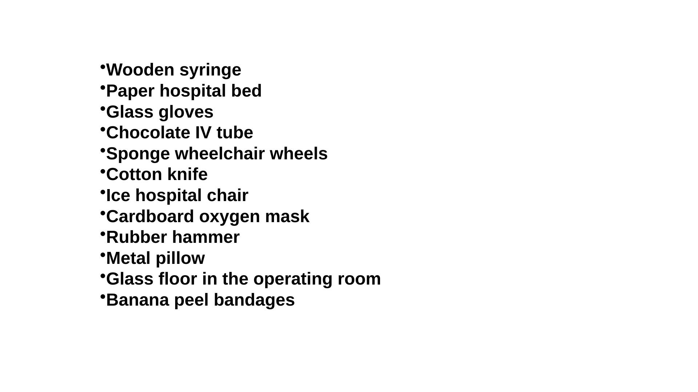
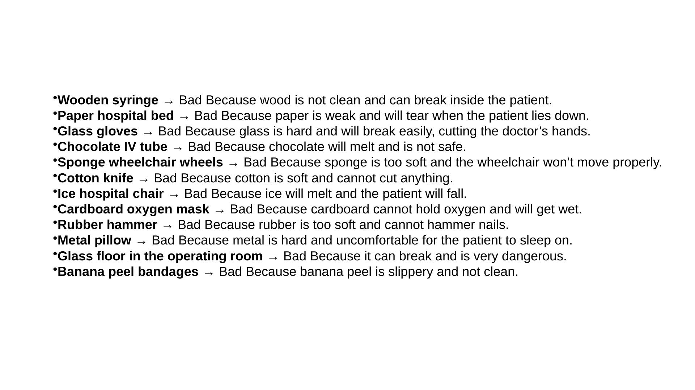

自習用ウェブ教材です。読み、考え、答えてから、隠れた答えを開いてください。
中心アイデア
Material → Property → Use
病院安全
間違った材料選択は危険になります。
インタラクティブカード
先に考えてから答えを開きます。
授業の流れ
Part 1 — なぜ材料が重要なのか
これは自習用教材です。ゆっくり読み、答えを開く前に考えてください。
中心アイデアは簡単です：Material → Property → Use.
Introduction — Why Materials Matter
技術は機械やコンピュータだけではありません。

私たちの周りのものはすべて材料でできています。病院ベッド、注射器、手袋、椅子、チューブ、マスク、車いすは、それぞれ違う材料を使います。
材料が重要なのは、物の動き方や壊れ方を決めるからです。間違った材料を選ぶと、単純な物でも役に立たず、危険になることがあります。
病院では、医師と患者が機器に依存するため、これはとても重要です。
考えて答えてください
周りを見てください。物を1つ選び、その材料を1つ答えてください。
答えを見る
例：椅子 → プラスチックと金属。マスク → 布またはフィルター材料。スマホ → ガラス、金属、プラスチック。
材料は物の性質を決める
材料によって性質が違います。

金属は強いことがあります。ゴムは柔軟です。プラスチックは軽いです。ガラスは硬いですが割れることがあります。
property とは、材料ができること、できないことです。強い、柔らかい、軽い、硬い、脆い、清潔、安全、防水などが例です。
技術者は材料を適当に選びません。その物が何をする必要があるかを考えます。
考えて答えてください
柔軟な材料はどれですか：金属、ゴム、プラスチック、ガラス？
答えを見る
普通はゴムです。プラスチックにも柔らかいものがありますが、ここではゴムが一番分かりやすい答えです。
間違った材料 = 間違った機能
材料が間違っていると、物は失敗します。

間違った材料を選ぶと、物はうまく働きません。ベッドは壊れ、手袋は破れ、チューブは割れるかもしれません。
病院では危険です。壊れたベッドは患者を傷つけます。破れた手袋は保護を弱くします。割れたチューブは漏れを起こします。
材料選択は工学だけでなく、安全の問題でもあります。
考えて答えてください
病院でチューブが割れると、なぜ危険ですか。
答えを見る
液体、薬、空気、酸素などが漏れ、システムが安全に動かなくなる可能性があるからです。
技術者が考える質問
技術者は材料、性質、用途をつなげます。

技術者は簡単ですが重要な質問をします。
どの材料が一番よいか。なぜここで使うのか。変えたら何が起こるのか。
この質問が、危険で変な設計を避ける助けになります。
考えて答えてください
なぜ “What happens if we change it?” と考える必要がありますか。
答えを見る
材料を変えると、強さ、柔軟性、安全性、快適さ、清掃しやすさ、費用、耐久性が変わるからです。
Material → Property → Use
この授業の考える道具です。

Material は、物が何でできているかです。
Property は、その材料がどのようにふるまうかです。
Use は、その物の仕事です。
よい設計はこの3つをつなげます。悪い設計はこのチェーンが切れています。
考えて答えてください
手術用手袋で重要な性質は何ですか。
答えを見る
柔軟、清潔、保護できる、破れにくいことです。
Part 2 — Good Idea or Crazy Idea?
この考える道具を使います。ただ笑うだけではなく、材料、性質、用途を考えます。
Good Idea or Crazy Idea?
考えてから答えを開いてください。

明らかに変な例もあります。最初はよく見えても、性質を考えると悪い例もあります。
それぞれについて考えてください。十分に強いか。清潔か。安全か。柔軟か。快適か。安定しているか。
シルクの病院ベッドシーツ
答えを見る
Good idea
シルクは柔らかく快適です。ただし清掃、費用、病院ルールも考える必要があります。
石の病院椅子
答えを見る
Crazy idea
石は重く、座ると非常に不快です。
発泡ゴムの手術用ナイフ
答えを見る
Crazy idea
発泡ゴムは柔らかすぎて切れません。
点滴スタンドとしてヘリウム風船
答えを見る
Crazy idea
風船は飛んでしまい、安定しません。
薬用カップとしてココナッツの殻
答えを見る
Crazy idea
清掃が難しく、薬には安全ではありません。
非常に重い患者用のスポンジマットレス
答えを見る
Crazy idea
スポンジは柔らかすぎて、大きな荷重に耐えられない場合があります。
段ボールの車いす
答えを見る
Crazy idea
段ボールは弱く、濡れると壊れます。
ゼリーの病院床
答えを見る
Crazy idea
ゼリーは滑りやすく、人が転びます。
羽の手術用手袋
答えを見る
Crazy idea
羽は柔らかすぎて手を守れません。
磁石につく金属の患者服
答えを見る
Crazy idea
MRIなどの近くで危険になる可能性があります。
紙の手術用マスク
答えを見る
Crazy idea
普通の紙は濡れやすく、空気を十分にろ過できません。
VIP患者用の金の病院ベッド
答えを見る
Crazy idea
金は高価すぎ、ベッド材料としては柔らかすぎます。
Part 3 — 間違った病院材料
次に、明らかに間違った材料で作った病院用品を見ます。
目的は笑うことだけではありません。property と use の関係を見ることです。
どれが悪い材料選択ですか
考えてから答えを開いてください。

リストには間違った病院用品があります。それぞれがなぜ悪いかを、簡単な property words で説明してみてください。
使える言葉：weak, brittle, dirty, soft, hard, slippery, melts, gets wet, unsafe, uncomfortable.
木の注射器
答えを見る
Bad
木は清潔にしにくく、患者の体内で壊れる危険があります。
紙の病院ベッド
答えを見る
Bad
紙は弱く、患者の重さで破れます。
ガラスの手袋
答えを見る
Bad
ガラスは硬くても脆く、割れて医師の手を切る危険があります。
チョコレートの点滴チューブ
答えを見る
Bad
チョコレートは溶け、安全ではありません。
スポンジの車いす車輪
答えを見る
Bad
スポンジは柔らかすぎて、車いすがうまく動きません。
綿のナイフ
答えを見る
Bad
綿は柔らかく、切ることができません。
氷の病院椅子
答えを見る
Bad
氷は溶け、患者が転ぶ可能性があります。
段ボールの酸素マスク
答えを見る
Bad
段ボールは濡れやすく、酸素をうまく保持できません。
ゴムのハンマー
答えを見る
Bad
ゴムは柔らかすぎて釘を打てません。
金属の枕
答えを見る
Bad
金属は硬く、寝るには不快です。
手術室のガラス床
答えを見る
Bad
割れると非常に危険です。
バナナの皮の包帯
答えを見る
Bad
滑りやすく、清潔ではありません。
悪い材料選択：説明
スライドは同じ考えを短くまとめています。

すべての悪い例では、材料の性質が用途に合っていません。
例えば、木は注射器にはよくありません。清潔にしにくく、壊れる可能性があります。ガラスは手袋にはよくありません。脆いからです。スポンジは車いすの車輪には柔らかすぎます。
結論は簡単です。材料選択は用途に合っていなければなりません。
考えて答えてください
これらすべてに共通する間違いは何ですか。
答えを見る
材料の性質が、物の用途に合っていないことです。
Part 4 — まとめと自習活動
授業をまとめ、中心の考え方を練習します。
材料選択は工学的思考です
よい設計は material, property, use を合わせます。
今日は、技術は機械やコンピュータだけではないことを学びました。すべての物は材料でできています。
材料は物のふるまいを決めます。病院では、間違った材料選択が危険になることがあります。
中心の考え方は、Material → Property → Use です。
考えて答えてください
病院用品を1つ選び、material → property → use を書いてください。
答えを見る
例：手術用手袋 → ゴム/ラテックス/ニトリル → 柔軟で保護できる → 手と患者を守る。
{kind=link}